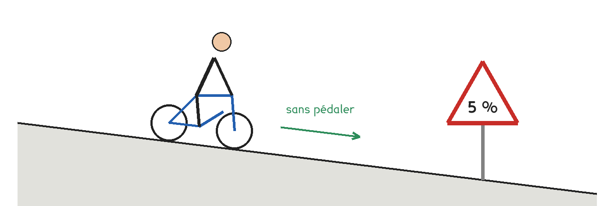
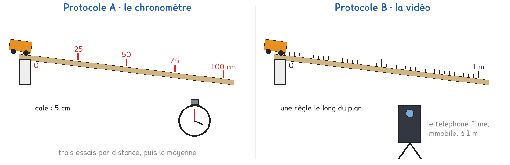
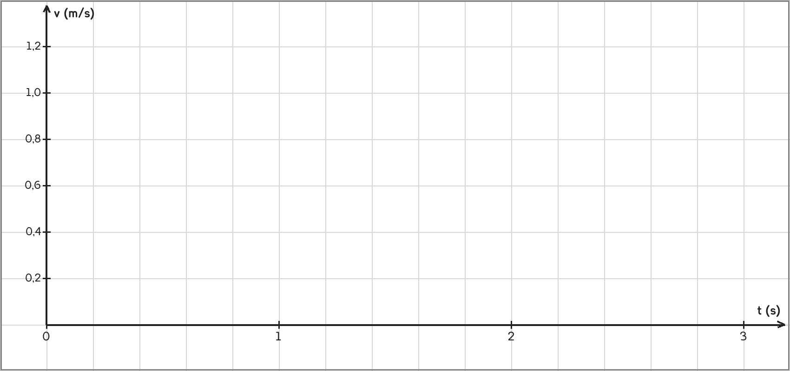

1re ou Tle Bac Pro · toutes spécialités · TP commun CT-11
La vitesse d'un objet qui descend une pente augmente-t-elle régulièrement ?
3 figures
Sujet. En haut d’une côte à 5 %, une cycliste lâche les freins et ne pédale plus. Sa vitesse augmente. Augmente-t-elle de la même quantité à chaque seconde, ou de moins en moins ?

Problématique : la vitesse d’un objet qui descend une pente augmente-t-elle régulièrement ?
Au laboratoire, le vélo devient un chariot, la côte un plan incliné à 5 %.
a) Une pente de 5 % descend de 5 m pour 100 m parcourus.
De combien faut-il surélever le haut d’un plan d’un mètre ?
5 m pour 100 m, donc ……… cm pour 1 m.
b) Convertir en mètres par seconde. On divise par 3,6. Le premier est fait.
| Vitesse en km/h | 3,6 | 18 | 36 | 9 |
|---|---|---|---|---|
| Vitesse en m/s | 1 | ……… | ……… | ……… |
Document. Quand la vitesse augmente de la même quantité à chaque seconde, le mouvement est uniformément accéléré. Son accélération vaut a = Δv ÷ Δt, en m/s².
c) Le compteur passe de 0 à 18 km/h en 10 s.
Calculer l’accélération, si elle est constante.
a = ……… ÷ ……… = ……… m/s²
Deux protocoles répondent à la même question : une partie de la classe prend A, l’autre prend B, et on compare à la fin.
Protocole A · le chronomètre. Le chariot part sans vitesse en haut du plan. On mesure la durée pour parcourir 25, 50, 75 et 100 cm, trois fois chacune, et on garde la moyenne.
Protocole B · la vidéo. Le mouvement est filmé au téléphone, une règle dans l’image. Image par image, on relève la position du chariot toutes les 0,4 s.
Dans les deux cas, on calcule une vitesse moyenne sur chaque intervalle, puis on trace la vitesse en fonction du temps.

d) Compléter le tableau pour comparer les deux protocoles.
| Protocole A | Protocole B | |
|---|---|---|
| Ce qu’on choisit à l’avance | les distances · les instants | les distances · les instants |
| Ce qu’on mesure | …………………………… | …………………………… |
| Une limite | …………………………… | …………………………… |
Le choix se fait maintenant, avant de toucher au matériel.
e) Quel protocole prenez-vous ? Justifier en une phrase.
Le professeur peut vous imposer celui qui reste disponible.
Je prends le protocole ……… parce que ……………………………………………………………………
f) Avant de mesurer, faire une hypothèse. Sur le graphique de la vitesse,
les points seront, entourer :
droite qui monte · courbe qui s’aplatit · droite horizontale
Avant de commencer
Le plan est posé à plat sur la table, sa cale bien stable.
Un livre arrête le chariot en bas du plan : il ne tombe pas de la table.
On lâche le chariot, on ne le pousse pas.
g) Schématiser votre montage de profil : plan, cale, chariot, appareil.
Le schéma se dessine sur la feuille du TP.
h) Relever, puis calculer pour chaque intervalle
la vitesse moyenne et l’instant milieu.
| Intervalle | 1 | 2 | 3 | 4 | 5 |
|---|---|---|---|---|---|
| A · trois essais pour t2 (s) | sans objet | ||||
| Positions x1 → x2 (m) | |||||
| Instants t1 → t2 (s) | |||||
| Vitesse v = (x2 − x1) ÷ (t2 − t1) (m/s) | |||||
| Instant milieu (t1 + t2) ÷ 2 (s) |
Chaque vitesse moyenne se place à l’instant milieu de son intervalle.
i) Placer les points (instant milieu ; vitesse) sur le quadrillage.

j) Les points sont-ils alignés ? Quelle est la nature du mouvement ?
Votre hypothèse de la question f est-elle confirmée ?
k) Tracer la droite, puis calculer l’accélération, sa pente.
a = Δv ÷ Δt = ……… ÷ ……… = ……… m/s²
l) Comparer avec l’autre protocole : même nature ? même accélération ?
Lequel des deux donne les points les plus réguliers ? Pourquoi ?
m) Répondre à la problématique en deux phrases.
Ce que ce TP a établi, et qui vaut pour tout mouvement en ligne droite :
À RETENIR
La vitesse moyenne est v = d ÷ t, en m/s. Pour passer des km/h aux m/s, on divise par 3,6.
Un mouvement est uniformément accéléré quand sa vitesse augmente de la même quantité à chaque seconde : le graphe v(t) est une droite qui monte, et sa pente est l’accélération, a = Δv ÷ Δt, en m/s².
TP commun de physique-chimie, toutes spécialités. Le travail se fait sur la feuille du TP : cette page en est la version à l'écran, sans les lignes à remplir. Rien n'est enregistré.